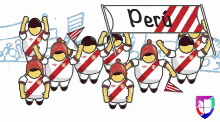

El vídeo proporciona una manera eficaz para ayudarle a demostrar el punto. Cuando haga clic en Vídeo en línea, puede pegar el código para insertar del vídeo que desea agregar. También puede escribir una palabra clave para buscar en línea el vídeo que mejor se adapte a su documento. Para otorgar a su documento un aspecto profesional, Word proporciona encabezados, pies de página, páginas de portada y diseños de cuadro de texto que se complementan entre sí. Por ejemplo, puede agregar una portada coincidente, el encabezado y la barra lateral. Haga clic en Insertar y elija los elementos que desee de las distintas galerías. El vídeo proporciona una manera eficaz para ayudarle a demostrar el punto. Cuando haga clic en Vídeo en línea, puede pegar el código para insertar del vídeo que desea agregar. También puede escribir una palabra clave para buscar en línea el vídeo que mejor se adapte a su documento. Para otorgar a su documento un aspecto profesional, Word proporciona encabezados, pies de página, páginas de portada y diseños de cuadro de texto que se complementan entre sí. Por ejemplo, puede agregar una portada coincidente, el encabezado y la barra lateral. Haga clic en Insertar y elija los elementos que desee de las distintas galerías.
Habilidades
El vídeo proporciona una manera eficaz para ayudarle a demostrar el punto. Cuando haga clic en Vídeo en línea, puede pegar el código para insertar del vídeo que desea agregar. También puede escribir una palabra clave para buscar en línea el vídeo que mejor se adapte a su documento. Para otorgar a su documento un aspecto profesional, Word proporciona encabezados, pies de página, páginas de portada y diseños de cuadro de texto que se complementan entre sí. Por ejemplo, puede agregar una portada coincidente, el encabezado y la barra lateral. Haga clic en Insertar y elija los elementos que desee de las distintas galerías. El vídeo proporciona una manera eficaz para ayudarle a demostrar el punto. Cuando haga clic en Vídeo en línea, puede pegar el código para insertar del vídeo que desea agregar. También puede escribir una palabra clave para buscar en línea el vídeo que mejor se adapte a su documento. Para otorgar a su documento un aspecto profesional, Word proporciona encabezados, pies de página, páginas de portada y diseños de cuadro de texto que se complementan entre sí. Por ejemplo, puede agregar una portada coincidente, el encabezado y la barra lateral. Haga clic en Insertar y elija los elementos que desee de las distintas galerías.
HTML
CSS
JavaScript

Proyectos
El vídeo proporciona una manera eficaz para ayudarle a demostrar el punto. Cuando haga clic en Vídeo en línea, puede pegar el código para insertar del vídeo que desea agregar. También puede escribir una palabra clave para buscar en línea el vídeo que mejor se adapte a su documento. Para otorgar a su documento un aspecto profesional, Word proporciona encabezados, pies de página, páginas de portada y diseños de cuadro de texto que se complementan entre sí. Por ejemplo, puede agregar una portada coincidente, el encabezado y la barra lateral. Haga clic en Insertar y elija los elementos que desee de las distintas galerías. El vídeo proporciona una manera eficaz para ayudarle a demostrar el punto. Cuando haga clic en Vídeo en línea, puede pegar el código para insertar del vídeo que desea agregar. También puede escribir una palabra clave para buscar en línea el vídeo que mejor se adapte a su documento. Para otorgar a su documento un aspecto profesional, Word proporciona encabezados, pies de página, páginas de portada y diseños de cuadro de texto que se complementan entre sí. Por ejemplo, puede agregar una portada coincidente, el encabezado y la barra lateral. Haga clic en Insertar y elija los elementos que desee de las distintas galerías.